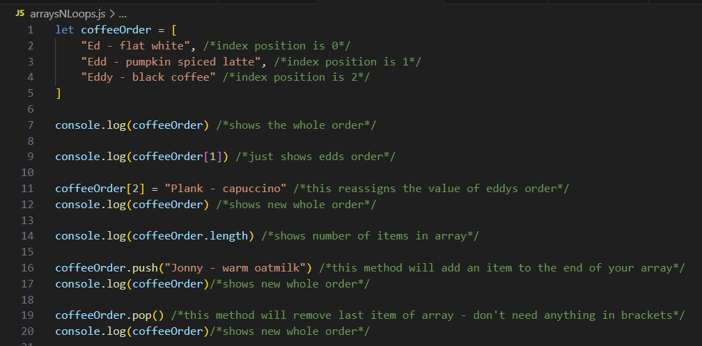

Dear Diary
Date:
Week 1
BEST PART OF THE WEEK:
Learning Arrays: I had never really explored arrays before, so it was genuinely interesting to learn something new. I found that I grasped the concept quickly and enjoyed the creative possibilities. I'm looking forward to incorporating arrays in upcoming projects.
WORST PART OF THE WEEK:
Friday's test: While working on the test an issue arose with my terminal that completely stumped me. I started to feel deflated, fearing I may be failing and doubted my confidence about everything we had learnt throughout the week. However, with my tutors assistance in pinpointing the minor terminal errors, I realised I had completed most questions correctly and in fact did have a solid grasp of the material. What I've learnt from this experience is the importance of not second guessing myself and to seek help sooner rather than later
3 NEW FACTS:
- Logical Operators: && , ||
- .push will add an item to the end of your array
PROBLEM I SOLVED:
During an if/else challenge, I couldn't work out why my last else wasn't working. After trying different things and moving my code around I realised I hadn't taken order into consideration, and the last else should have been the if. In the future I need to logically solve the problem following the steps top to bottom before writing the code, and not just writing it in the same order as the question.